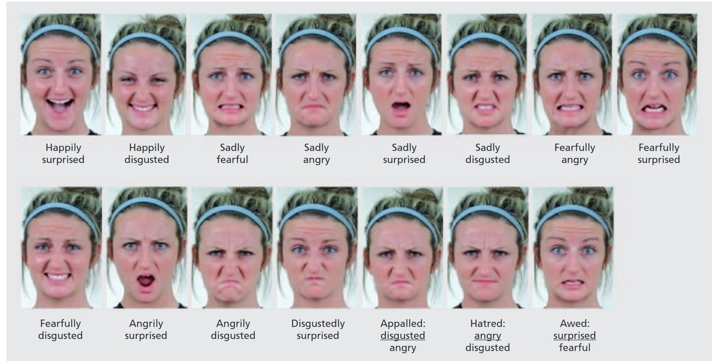
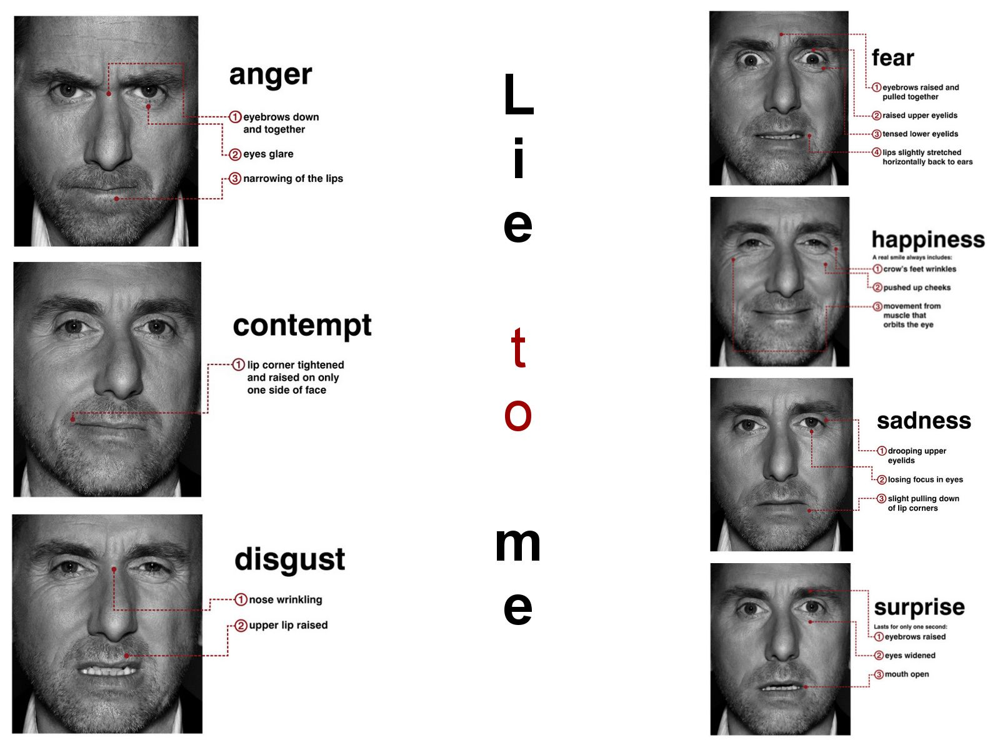

Menschliche Kommunikation¶
In der menschlichen Kommunikation läuft nur zu ca. 1/3 auf der verbalen Ebene ab, also das was geschrieben oder gesprochen wird. Ungefähr 2/3 unserer Kommunikation verläuft nonverbal. Nonverbal bezeichnet die Mimik, Körpersprache, räumliche Position und Stimmmodulation.
Kulturell bedingte Unterschiede in der Kommunikation gibt es dabei nicht nur durch unterschiedliche Sprachen, sondern auch durch mehrdeutige und unterschiedliche Ausdrucksweisen in der nonverbalen Kommunikation.
Jedoch gibt es beispielsweise bei der Mimik auch kulturell unabhängige Muster, die überall auf der Welt gleich verstanden werden. Gerade in Bezug auf den Ausdruck von Emotionen.
Emotionen¶
Definition
Emotion: Reaktion des gesamten Organismus, die die physiologische Erregung, Ausdrucksverhalten und bewusste Erfahrung beinhaltet.
Emotionen beinhalten also sowohl
Ausdrucksverhalten (z.B. Mimik)
Aktivierung bestimmter zentralnervöser Systeme im Gehirn
physiologische Reaktionen (z.B Blutdruck, Herzfrequenz)
subjektives Erleben
kognitive Bewertung der Situation
Motivation & Handlungsbereitschaft
Emotionen sind also nur teilweise von außen wahrnehmbar und messbar.
Wie kann man Emotionen ableiten?
Sprache
Tonation
Gesichtsausdrücke
Körperhaltung
Grundemotionen (BE)¶
Sechs grundlegende Emotionen, die in vielen Datensätzen die Grundlage für das Labeling darstellen, gehen auf den US-amerikanischen Psychologen Paul Ekman zurück. Diese Emotionen werden als Grundemotionen oder Basisemotionen bezeichnet.
Diese Grundemotionen sind in allen Kulturen der Welt vertreten und werden überall nahezu gleich ausgedrückt. Unabhängig davon, wo Menschen auf die Welt gekommen sind oder wo und wie sie erzogen wurden, können sie diese Grundemotionen instinktiv bei dem Gegenüber erkennen und meist auch richtig zuordnen somit sind sie kulturunabhängig und international gültig.
Es wird davon ausgegangen, dass jeder Mensch diese Emotionen von Natur aus (auch schon im Säuglingsalter) in sich trägt und empfinden kann.
Die Kriterien für die Klassifikation der Grundemotionen sind:
Universelles Ausdrucksverhalten
Angeborene Reaktionsmuster
Spezielle Auslösungsbedingungen und adaptive Funktionen (z.B. Bedrohung -> Furcht, Verlust -> Trauer)
Automatische Bewertung
Spezielle Gehirnsysteme
Die 6 Grundemotionen nach Paul Ekman sind:
Freude
Trauer/Traurigkeit
Überraschung
Wut/Ärger
Angst/Furcht
Ekel

Kombinierte Emotionen (CE)¶
Inzwischen geht man davon aus, dass die menschliche Emotionsvielfalt weit über die grundlegenden Basisemotionen hinaus geht und auch die Vielfalt der Gesichtsausdrücke umfangreicher ist, als nur die zuvor beschrieben Basisemotionen.
Ein Beispiel sind die zusammengesetzten Emotionen (Compound Emotions). Diese Emotionen setzten sich jeweils aus zwei Grundemotionen zusammen.
Ein Beispiel für eine kombinierte Emotion ist die freudige Überraschung. Wir erleben ein freudig überraschendes Ereignis anders, als ein ausschließlich überraschendes. Aus diesem Grund ist es durchaus sinnvoll die Existenz dieser komplexeren Emotionen ebenfalls zu berücksichtigen, um eine größere Differenziertheit in der Emotionserkennung abzubilden.
Auch bei kombinierten Emotionen lassen sich konstante und weitestgehend kulturell unabhängige Gesichtsausdrücke identifizieren, welche sich von denen der Basisemotionen unterscheiden.
Beispiele für zusammengesetzte Emotionen:
freudig überrascht
freudig angewidert
traurig ängstlich
traurig wütend
traurig überrascht
traurig angewidert
wütend ängstlich
ängstlich überrascht
wütend angewidert
wütend überrascht
wütend angewidert
ekelhaft überrascht
fröhlich ängstlich
fröhlich traurig

Mimik¶
Definition
Mimik bzw. Gesichtsausdrücke (facil expressions) sind sichtbare Bewegungen auf der Gesichtsoberfläche und die Reaktion auf den inneren emotionalen Zustand, die Absichten oder die soziale Kommunikation einer Person.
Einige mimische Ausdrücke müssen je nach Kontext unterschiedlich bewertet werden, da sie sich sehr stark ähneln können, z.B. Angst vs. Wut.
Wie stark die Mimik ausgepräg ist hängt neben dem kulturellen Kontext auch von der individuellen Persönlichkeit einer Person ab. Allerdings sind einige Ausdrucksmerkmale auch kulturübergreifend feststellbar.
Die (natürlichen) Ausdrücke dauern jeweils nur wenige Sekunden an. Gestellte Ausdrücke wie beispielsweise für ein Foto können auch länger andauern. Echte Emotionen bauen sich jedoch im Gesicht langsamer auf und ab, als gestellte.
Die verschiedenen Gesichtsregionen haben eine unterschiedlich starke Aussagekraft, so sind mehr Informationen an Augen und Mund als an Stirn oder Wange abzulesen.
Micro Expressions (ME)¶
Definition
Mikroausdrücke sind flüchtige und unwillkürliche Gesichtsausdrücke.
Egal ob bewusst, unbewusst, erwünscht oder unerwünscht: Wir sind nicht in der Lage unseren aktuellen Gefühlszustand völlig zu verbergen. Über sogenannte Mikroausdrücke oder Micro Expressions (ME) zeichnet sich für den Bruchteil einer Sekunde (1/25 bis 1/2 s) unsere tatsächlichen Gefühle auf unserem Gesicht ab.
Damit ist unsere Mimik schneller als unser Verstand und egal wie sehr wir uns bemühen, wir können diese mimischen Reaktionen nicht steuern. Erst nach diesen paar Millisekunden haben wir die Möglichkeit unsere Mimik wieder unter Kontrolle zu bringen und den Gesichtsausdruck zu zeigen, den wir zeigen wollen.
Mikroausdrücke sind so schnell und subtil, dass sie mit dem menschlichen Auge nicht wahrgenommen werden. Eine Studie zeigt, dass normale Menschen ohne Training bei Aufgaben zur Erkennung von Mikroausdrücken im Durchschnitt nur wenig besser als der Zufall abschneiden. Daher werden Computer Vision und maschinelle Lernmethoden für die automatische Analyse von Mikroausdrücken interessant. Maschinelle Lernverfahren sind bei einer ausreichend hohen Framerate in der Lage die Mikroausdrücke zu detektieren und zu erkennen.
